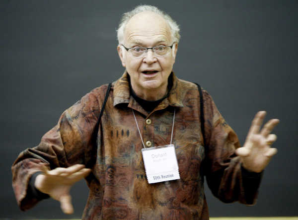

Donald Ervin Knuth:
"father of the analysis of algorithms"
Donald Ervin Knuth ( born January 10, 1938) is an American computer scientist, mathematician, and professor emeritus at Stanford University. He is the 1974 recipient of the ACM Turing Award, informally considered the Nobel Prize of computer science. Knuth has been called the "father of the analysis of algorithms". He is the author of the multi-volume work The Art of Computer Programming. He contributed to the development of the rigorous analysis of the computational complexity of algorithms and systematized formal mathematical techniques for it. In the process he also popularized the asymptotic notation. In addition to fundamental contributions in several branches of theoretical computer science, Knuth is the creator of the TeX computer typesetting system, the related METAFONT font definition language and rendering system, and the Computer Modern family of typefaces.As a writer and scholar, Knuth created the WEB and CWEB computer programming systems designed to encourage and facilitate literate programming, and designed the MIX/MMIX instruction set architectures. Knuth strongly opposes the granting of software patents, having expressed his opinion to the United States Patent and Trademark Office and European Patent Organisation.
